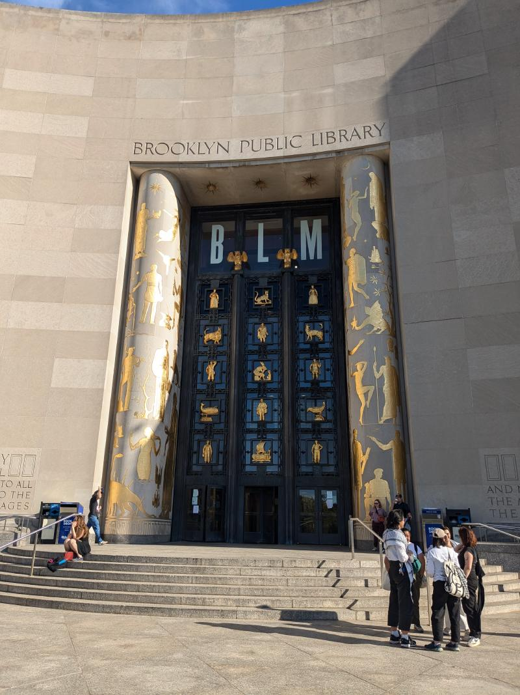
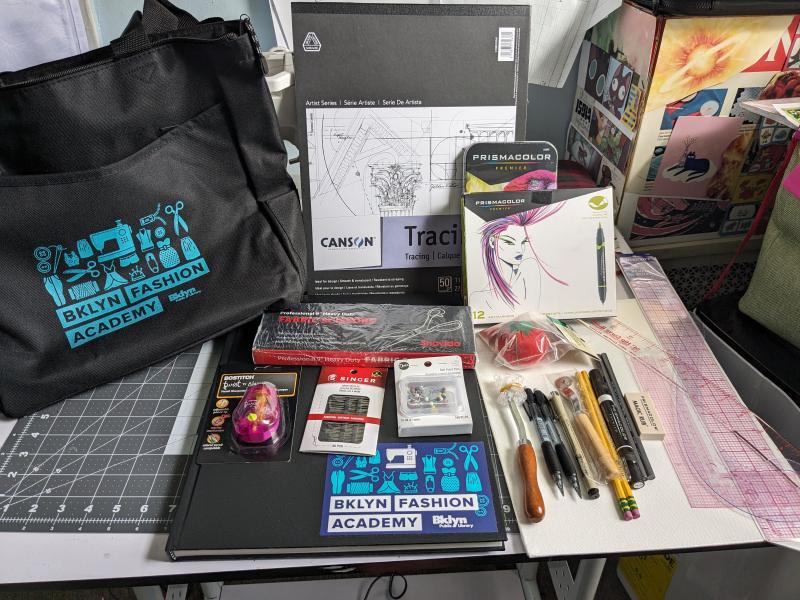
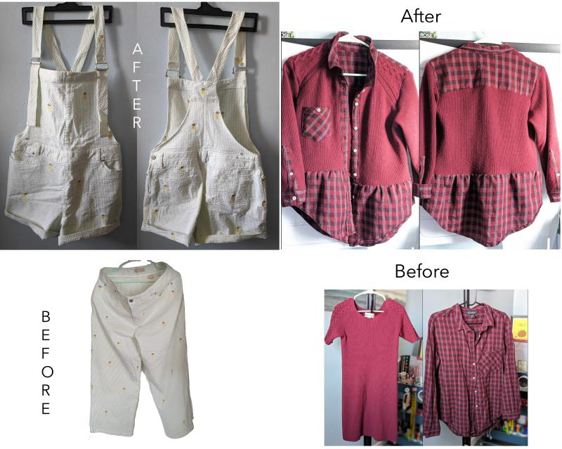
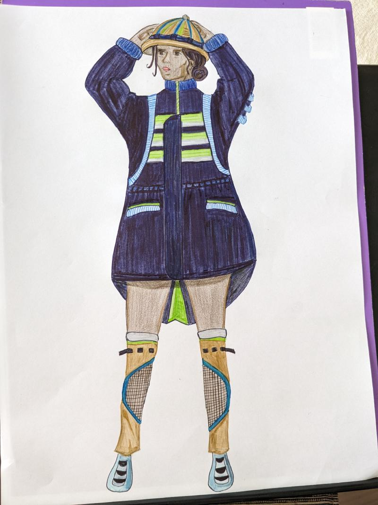
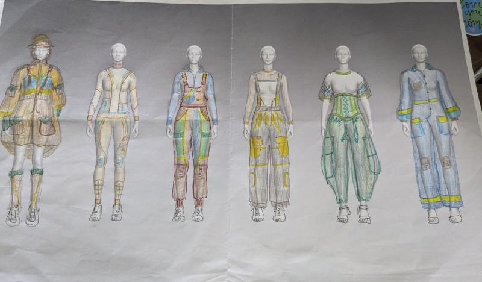
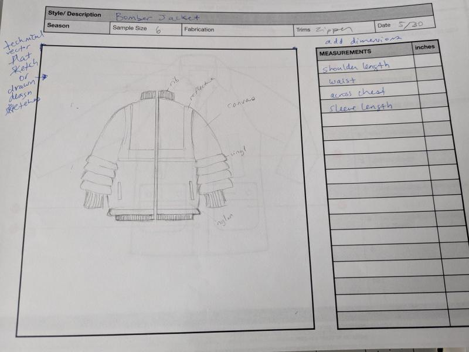
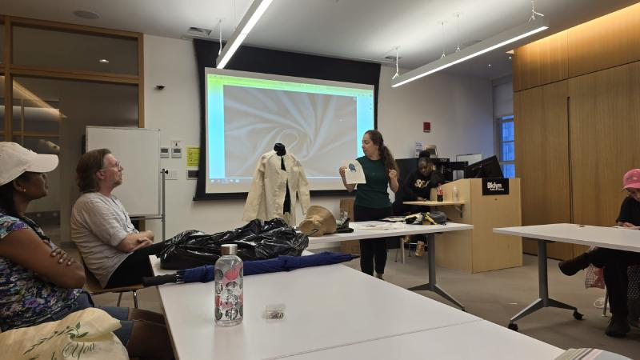
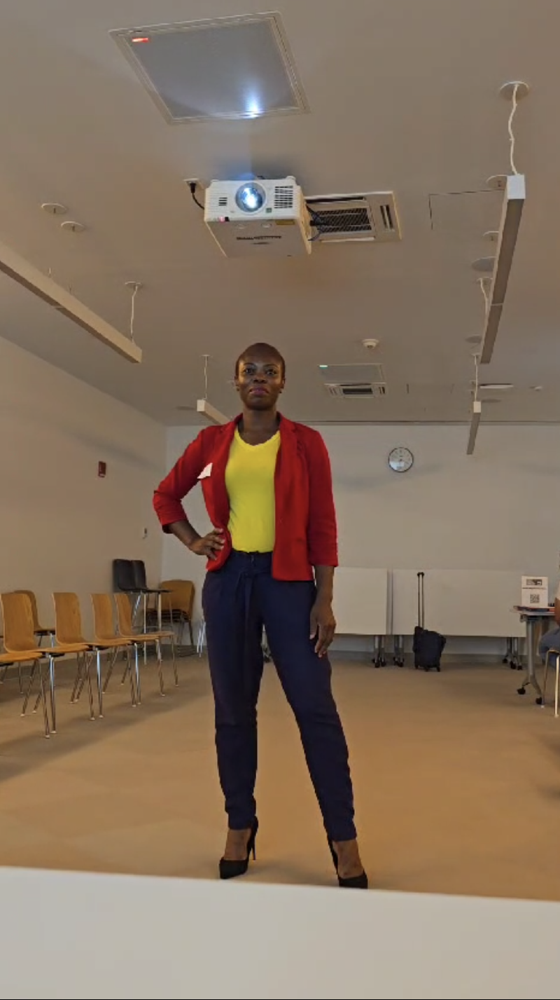
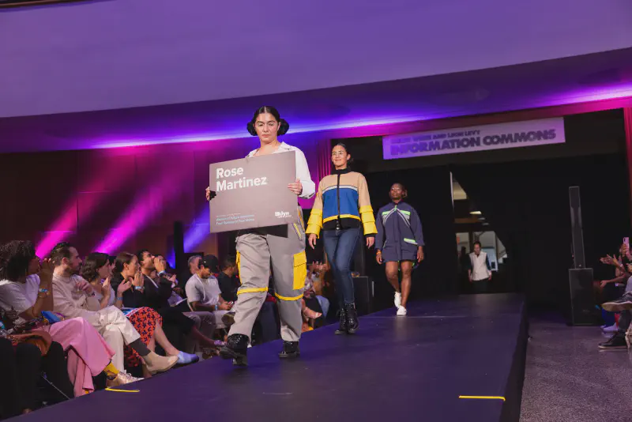

Wondering what the BKLYN Fashion Academy is really like? I entered BKLYN Fashion Academy with no formal training and finished presenting a mini collection on the runway—one of the most challenging and rewarding experiences of my life.
When I applied, I searched everywhere for details on what the program is really like. I couldn’t find anything beyond the basic program description and went through the experience with little to no advance preparation.
This guide provides the comprehensive overview I wish I’d had. This is the first detailed insider’s look at the BKLYN Fashion Academy, written from a student’s perspective.
If you’re an aspiring designer, career changer, or creative entrepreneur, this guide takes you inside Brooklyn Public Library’s 16-week intensive fashion program. It covers the complete process from application through that final moment when you’re presenting your collection on the runway.
You’ll discover:
- What to expect week by week
- Potential challenges and how to prepare
- Whether it’s right for your goals and lifestyle
- What a nontraditional fashion education looks like
📥 Plus, I’ve added a free PDF at the end that gathers every resource from the guide and more for easy reference.
👉 TL;DR: Short on time? Check out this quick overview for the essentials, or keep reading for the full breakdown.
What is the BKLYN Fashion Academy?
🧵 A Free Fashion Design Program in Brooklyn
The BKLYN Fashion Academy (BFA) is a free, 16-week fashion program run by the Brooklyn Public Library (BPL). Aspiring designers create mini-collections, develop business skills, and showcase their work in a professional runway show.

🪡 How It Started
BPL staff developed the academy through the library’s BKLYN Incubator Project. Rather than starting from scratch, they drew upon on NYC’s fashion legacy and existing partnerships. This created what may be the country’s only library-based fashion program.
Key partners shaped the program’s curriculum and industry connections, including Pratt’s Brooklyn Fashion + Design Accelerator, Mood U, and Materials for the Arts. The program has had unique partners as well like Microsoft Research, who collaborated with participants to integrate wearable technology into their designs.
FABSCRAP, BK Style Foundation - FWB, and Women.NYC are current collaborators that support the program’s focus on sustainability and inclusion.
✨ Runway Themes: Fashion as Storytelling
Each year’s runway show centers around cultural themes that challenge designers to explore history, identity, and creativity into fashion. Themes over the years have included:
-
Mode en Couleur (2018) 🎥 Watch the show
Celebrating the vibrant Congolese Les Sapeurs movement -
Homage to Future Fashion (2019) 🎥 Microsoft Research | Part 1 | Part 2
Neo-Victorian steampunk honoring Namibia’s Herero women, featuring Microsoft Research wearable technology -
2023: Ancient Egypt: Gods of the Runway 🎥 Watch the show
Contemporary interpretations of mythological power and ancient aesthetics
These themes transform personal narratives into cultural dialogue, inspiring designers to create with purpose and meaning.
🎯 What Designers Learn & Receive
The BKLYN Fashion Academy makes fashion education accessible to non-traditional students. Designers at the BFA:
- Develop a mini-collection, from concept to runway
- Learn both technical design and fashion business skills
- Access mentorship, production resources, and market research tools
- Gain hands-on experience in a professional runway show environment
- Explore sustainable and ethical design practices
- Build confidence and creative identity through a real-world challenge
Each participant receives a branded toolkit with sketching materials, sewing supplies, and a FABSCRAP voucher—providing essential resources that help newcomers enter the fashion industry.

Applying to the BFA
📝How I Applied and Got Accepted Into the BFA
The BKLYN Fashion Academy’s application process is simple. When I applied in 2024 the application asked to:
- Upload photos of two garments you’ve made
- Check off your interests from the program offerings
- Share a short personal statement about why you’d be a good fit
- Indicate that you have experience with a sewing machine.
That’s it. There’s no fee, no portfolio deep-dive, and no pressure to have a fashion degree.

✨ My 2024 Cohort Experience
I applied on the last day, unsure whether I had a chance. Six weeks later, I was invited to interview and then accepted as a designer for the 2024 cohort. My interest in merging data and tech with refashioning, along with my eagerness to gain industry knowledge likely made me a strong fit for the program. My goals aligned closely not only with the 2024 theme, Women of Future Industries, but also with the BFA’s broader mission of supporting innovation and inclusion in fashion entrepreneurship.
👉 Tip: While the application process is straightforward, having a genuine connection to their current theme and mission—really strengthens your application.
🎤 The Interview
The interview takes place at the Library’s Business & Career Center. The panel typically includes 4-5 industry professionals including educators, small business owners, and program alumni now working in the industry.
Here’s what you’ll need to bring:
- Garments from your application photos (👉tip: bring hangers)
- A few sketches (👉tip: keep them organized)
You can expect questions about:
- Your sewing background (e.g., whether you’re self-taught)
- Why you want to be part of the program
Judges will examine your garments and ask follow-up questions to gauge your interest in the program and learn more about you. If you’re nervous, like I was, book the earliest time slot—you’ll get it out of the way and avoid delays.
The selection process is competitive. Cohorts are small (about 15–20 designers), and the program’s intensity often leads to some early drop-off.
📁 Orientation & Program Requirements
At orientation, participants receive a welcome folder with:
- A program calendar (holidays + session dates)
- A class and lab schedule
- A photography release form
- A program guidelines document (expectations, deliverables, runway policies)
- A resource list (sewing books, library links, and fabric/notion suppliers)
Class times shifted occasionally, but runway prep and the final show were fixed. Most ran on weekday evenings (4–8 PM), with some Saturday fabric sourcing trips and occasional extended sessions (2–8 PM).
Participants must notify scheduling conflicts to organizers, who will clarify what’s mandatory. Be prepared to adjust your schedule. Many of us balanced full-time jobs or caregiving alongside the program.
📆 Example Program Timeline (Based off 2024)
| Foundation Phase ⟶ | Development Phase ⟶ | Production Phase ⟶ | Finalization Phase |
|---|---|---|---|
|
|
|
|
🛑 Reality Check: Is This Program Right for You?
This program is open to anyone—whether you’re a self-taught sewist, pursuing a fashion career, or growing your brand. You don’t need a business or years of experience—just creativity and the commitment to follow through.
However, the BFA is an intensive design accelerator—part critique group, part studio lab, part peer-mentorship circle. While open to designers at any level, this isn’t a casual commitment. You’ll balance independent work with collaborative feedback to create runway-ready pieces.
If you’re ready to challenge yourself, commit to the process, and put in the self-driven work, there’s nothing quite like it.
If you’re expecting traditional lecture-style classes with minimal outside work, it may not be for you.
📋 Program Guidelines & Deliverables

- 4 runway-ready looks forming a cohesive capsule collection
- Canvas illustration of your main look (displayed in the Grand Lobby)
- Theme clearly expressed throughout your work
- Skin-tone undergarments must be worn by models.
Each year features a unique theme that may have additional requirements. For example, the theme Women of Future Industries required designers to create a womenswear look inspired by women in a specific future-focused industry.
Design Realization
From Vision to Concept
Design Realization is the first technical lab—a cornerstone class that kicks off the program and forms the backbone of all the hands-on work. Here, you’ll develop your initial ideas into tangible designs, even if they’re still rough or incomplete. At orientation, you’ll be asked to prepare your:
- Theme Interpretation: Identify your vision on the annual theme
- Visual References: Gather fabric swatches, images, sketches–anything that helps express your vision.
This helps you be prepared to explain your concept, visual direction, and how your collection will stay cohesive during the class.
✨ My 2024 Cohort Experience
My vision was greater representation of women in the emergency services industry. To bring it to life, I created an AI-assisted Pinterest moodboard featuring female firefighters and pioneers like Amelia Earhart. Those visuals made it much easier to pitch my ideas to my mentor.
Next came design worksheets—similar to fashion briefs—to help shape our ideas. The best way to approach them is as brainstorming tools, not tests (though it’s hard to feel relaxed when you’re filling them out with CBS videographers filming).
From there, you sketch six initial looks and refine them into four final designs for your capsule collection.

✏️ Tips for Success
- Have a clear point of view, even if the details aren’t final
- Name your looks — metaphorical (e.g. Stacy) or descriptive (e.g. Wavy Buttondown Dress)
- Sketch loosely — focus on silhouettes, details, or key elements
- Keep fabric & function in mind — color, texture, stretch vs. woven, closures, etc
- Aim for brevity — You may only have 5 minutes to present your ideas
Inside the Classroom
From Sustainability to Market Research
The BFA’s four classes lay a foundation for launching a fashion business. Here’s what each class covered, what I learned, and my key takeaways.
🌱 Designing for Sustainable Manufacturing
Taught by Tara St James of Re:Source(d), this class offered a comprehensive framework for applying sustainable practices to fashion. It pushed us beyond aesthetics and trends into systems thinking and long-term impact.
Key lessons:
-
Sustainability is Complex and Holistic: It’s not just about choosing organic cotton or recycled polyester, but about the entire product lifecycle. This includes materials, design, labor, water and energy use, and end-of-life disposal.
-
The Design Phase Matters: Often cited by sustainability experts, up to 80% of a product’s environmental impact is determined during design, giving designers enormous responsibility for sustainable outcomes.
-
Waste Reduction is Critical: From designing with zero-waste patterns to recovering cutting room scraps and rethinking deadstock, the class showed how much waste can be prevented or recovered.
✨ My 2024 Cohort Experience
I saw the challenge of waste firsthand. In making just four garments, I ended up with three bags of scraps—despite sourcing intentionally. For fabrics and trims, I relied mostly on discarded textiles and secondhand clothing. Yet even when working only with reclaimed materials, minimizing new waste is still a challenge that requires planning and strategy
🏷️ Sample Development & Sourcing
While Designing for Sustainable Manufacturing explored integrating sustainable practices throughout the fashion production pipeline, the two classes led by Roberto Silva of Luz Studio focused on technical execution. Silva introduced the terminology and processes needed to turn a design into production.
Tech packs and cutters must were new terms to me, but I quickly realized their importance for communicating design intent and preparing for production. In Sample Development, the course showed how extensive collaboration between designers, pattern makers, and production teams to develop the documentation manufacturers needed for consistent, scalable reproduction.

🏭 Production and Cost Negotiation in Supply Chains
In this class, Silva showed how every design decision impacts production timelines, sourcing, and ultimately the cost of manufacturing a garment. Once a design is reproducible, the real challenge is managing logistics, costs, and supplier relationships to determine if—and at what price—it can be produced.
Garment costing includes six core components:
- Fabric
- Trims & accessories (labels, buttons, zippers)
- Labor (cutting, sewing, finishing, packaging)
- Overhead (equipment, utilities, facilities)
- Logistics (shipping, customs, freight)
- Markups (wholesale and retail pricing)
Costing sheet examples showed how even small choices—like seam finishes, fabric type, or packaging—can significantly affect the final price. Silva explained how tech packs and bills of materials serve as essential communication tools for securing accurate and fair manufacturer quotes.
The key lesson: successful production requires strategic thinking beyond creativity. You must advocate for your design while understanding when to negotiate, compromise, or protect margins without cutting corners.
🔍 Market Research
The final class was an introduction to Market Research for Fashion Businesses. Market research means understanding your customers, competitors, and industry trends to guide smart business decisions. Before launching products or campaigns:
- Define your customer—age, location, spending habits, values
- Spot your niche or market gap
- Track trends and shifting consumer preferences
- Assess competitor strategies, pricing, and sourcing
A BPL business librarian showed us how to use professional research platforms like SimplyAnalytics, Statista, and Mintel—all free with a library card. We learn how to find answers to key questions like: Is there demand for my product? Where are my customers? What should I charge?
While less fun than hands-on labs, this knowledge is critical for building a sustainable, long-lasting brand.
Sourcing Fabric
♻️ From Textile Waste to the Runway
The BFA partners with FABSCRAP, a nonprofit textile reuse center that diverts unused fabric from landfills to designers. Early in the program, we volunteered at their warehouse—earning 10 lbs of free fabric and a discount for future purchases. Many of us left with bags of textiles, trims, and fresh inspiration while supporting a more sustainable fashion system.
👉 Tip: Bring a reusable bag or backpack—you’ll need it to haul everything home.
FABSCRAP became the primary fabric source for participants, myself included. Thrift stores also proved invaluable for unique textiles, especially unexpected materials like vinyl or oversized garments perfect for deconstruction. Don’t overlook fabric swapping with your cohort either.
👉 Tip: Don’t get stuck chasing the “perfect” fabric. Under deadlines, prioritize accurate yardage, construction-friendly materials, and cohesion across the collection.

Inside the Technical Labs
After Design Realization, we moved into four hands-on technical labs—where designs transform from sketches into physical garments. Each lab acts as a progress check with mentor support, but it’s on you to come prepared. Show up without materials or questions and you’ll miss out on meaningful feedback. Come with specific challenges and materials, and the labs become far more valuable.
Lab 1: Patternmaking 🧵
Bring commercial patterns, blocks, or drafts to the session. The goal of patternmaking is to create the blueprint for each of the designs. Use this lab to ask about modifying patterns or combining elements from different sources.
👉 Tip: Search for free patterns online and customize them—it saves time and gives you a solid starting point.
Lab 2: Cut & Fit ✂️
This lab centers on evaluating your muslins and adjusting the fit. You’ll also troubleshoot pattern issues, review fabric choices, and prep for construction. Fitting is iterative, not a one-time fix.
👉 Tip: Mark your changes directly on your pattern to keep track of them.
Labs 3 & 4: Garment Construction + Sample Completion 👗
These final labs guide you through completing your garment. Solid preparation and detailed planning can mean the difference between a smooth runway day and a stressful last-minute crunch.
Come prepared with your construction checklist and any work-in-progress pieces. Use these sessions to clarify sewing order, test techniques and simplify steps if you’re falling behind.
👉 Tip: Don’t stress about the inside finish (like seams)—focus on the exterior.
✏️ Making the Most of Technical Labs:
- Come with questions – Keep a running list of issues like pattern adjustments or technique questions
- Bring work-in-progress – Patterns, mockups, test fabric, or partial pieces give instructors something to review
- Test first – Try new techniques on scraps before using your final fabric
- Break down steps – Writing out construction steps helps spot areas to simplify, seek guidance, and pace your work.

Working with Models
The Professional Reality

You’ll personally select and coordinate with your models. Come prepared with a notebook, pen, and measuring tape, and gather each model’s name, email, and phone number to schedule fittings. Since the models are volunteering, clear and flexible communication is essential. And remember—they’re often just as nervous as you are. Approach them confidently—being selected is exciting for everyone involved.
🚪 Fitting Room Workarounds
Since the program doesn’t provide a dedicated fitting space, you’ll need to find your own. Some options include:
- Home fittings: Use your own space if both parties are comfortable with this.
- Public venues: Look for spaces with private changing areas, such as department stores, community centers or marketplaces.
Be respectful of the space and, if possible, schedule fittings during slower hours. It may not feel glamorous, but it’s part of the behind-the-scenes hustle.
✏️ Tips to Make Casting & Fittings Easier
- Ask a friend or family member to model — it’s easier to coordinate and take measurements early. (Note: you can’t model your own looks.)
- Decide garment sizing in advance to cast more efficiently.
- Add extra seam allowance — it’s always easier to take in than let out.
Runway Prep & Show Day
On Runway Prep Day (the day before the show), you drop off your finished garments while your mentor reviews each look, flags last-minute fixes, and offers styling advice with accessories and shoes. Two weeks prior, you’ll meet your hair and makeup stylist, choose your runway song, and set the order of your models. In 2024, the program partnered with T. Cooper of Major Face to help designers finalize hair and makeup.
On show day, the library closes early, transforming into a full fashion show venue with guest seating in front and a busy backstage filled with hair, makeup, and final fittings. It’s a long day with many moving parts, and once the show starts, it flies by. The moment on stage lasts only a few minutes, but for first-time designers, it’s an intense mix of excitement and nerves.
You’ll enjoy the runway more if you’re rested and not rushing to finish garments backstage. Even if things aren’t perfect (and they rarely are), making it to the runway is a major accomplishment—many participants never get this far.
Here are a few tips to make the final stretch smoother:
✅ Hire your own photographer – While the library provides photos, a dedicated shoot may provide more control and higher-quality portfolio images.
✅ Plan accessories and shoes early – These are part of the design, not an afterthought.
✅ Licensed runway music is a must – You can search libraries like Epidemic Sound, or you can commission a custom track.
✅ Walk slowly – Give photographers time to capture you and your models by resisting the urge to rush.
✅ Thank your models – Small gestures like tips and social media tags go a long way.

💭 Reflections & Final Thoughts
The BKLYN Fashion Academy isn’t just about creating garments—it’s about building confidence in your capabilities. This intensive experience demands significant time and emotional commitment, leading to genuine personal growth. After the show, many participants use the momentum to apply for scholarships, showcase in other events, or build their own brands. I interviewed three fellow designers about their personal journeys through the program.
If you’re interested in their stories and insights, read more here:📎 Behind the Seams reflection
This guide covers the complete BKLYN Fashion Academy journey—from application to runway day. The BFA taught me technical skills, but more importantly, it showed me what building a fashion career actually requires.
Whether you’re:
- Considering applying — use this guide to determine if it’s the right fit
- Exploring other paths — use this as a benchmark for hands-on fashion programs
- Already starting — apply these tips to navigate your experience
Trust your creative instincts, embrace the challenge, and know that you’re capable of the hard work required to bring your ideas to life.
✨ Grab this free resource list for emerging designers!
A few links are affiliates, which helps support my work.
↥ Back to Top